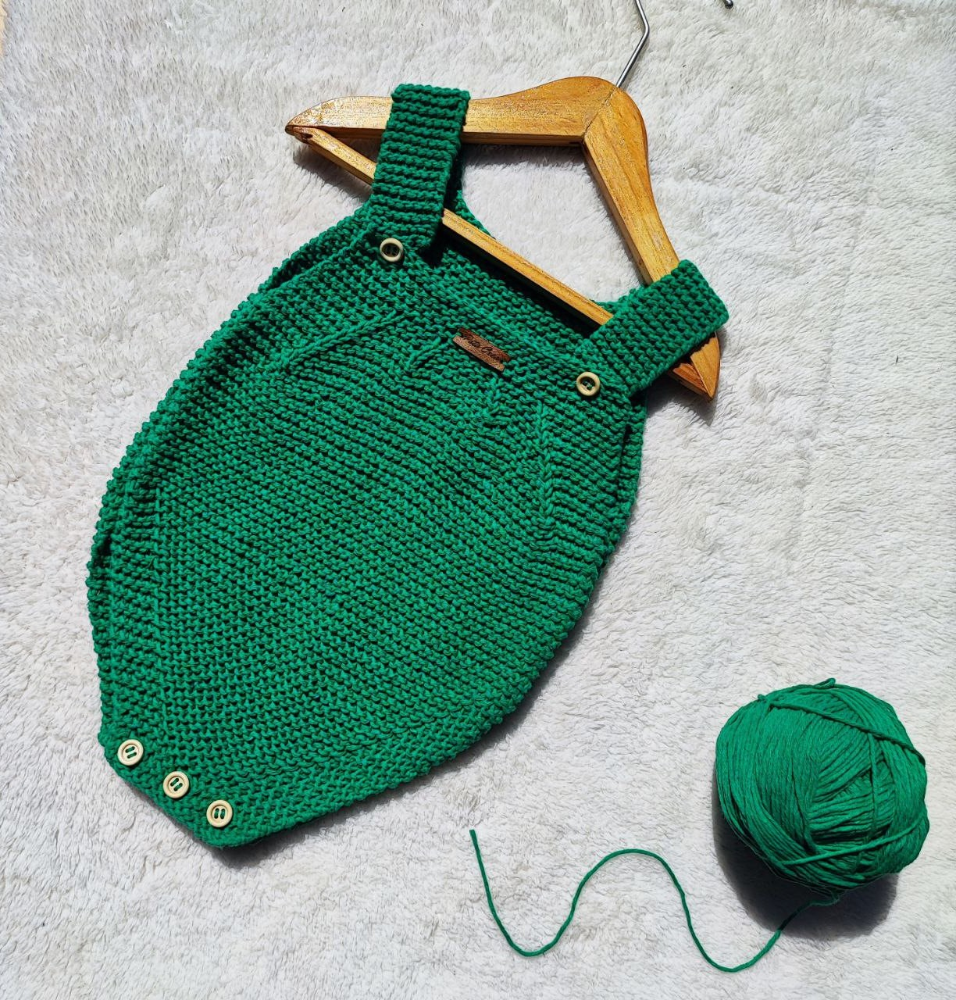

¡Bienvenido a Pata Crea!
En Pata Crea, nos apasiona crear tejidos únicos y personalizados para ti. Trabajamos meticulosamente por pedido, asegurando que cada pieza sea una expresión auténtica de tu estilo y personalidad.
¿Cómo funciona?
- Explora nuestra amplia gama de modelos en la sección de Productos y encuentra el que más te inspire.
- Ponete en contacto con nosotros a través de cualquier medio de comunicación que te resulte más conveniente. Indícanos el modelo, el tamaño y el color que deseas para tu tejido.
- Una vez recibido tu pedido, te informaremos sobre el tiempo de elaboración y las opciones de colores disponibles en lana para tu selección.
- Una vez completado tu pedido, nos pondremos en contacto contigo para coordinar la entrega de tu pieza personalizada.
En Pata Crea, nos comprometemos a brindarte una experiencia de tejido única y satisfactoria. ¡Estamos emocionados de crear algo especial para ti!
